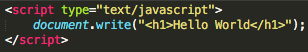
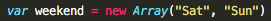
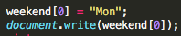
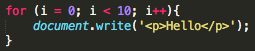
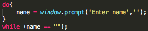
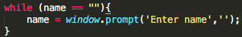
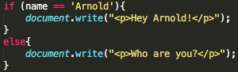
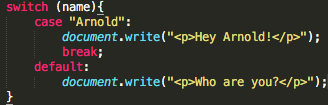
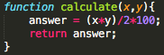
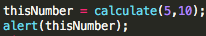

JavaScript tour
Thank you for choosing JavaScript tour! There are 3 main destinations for this tour.
You are the boss, so pick which every you like first!
» THE MUSEUM
A RECOMMENDED START: Learn about a brief history and evolution of JavaScript from time to time.
» THE FACTORY
Here we will have a look on how JavaScript is used in website development and other useful code samples and resources.
» THE COLOSSEUM
If you feel you have understood enough and you are up for challenges, take a short quiz to test yourself.
THE MUSEUM
What is JavaScript?
A web document is typically built by a triad of components:
- content
- presentation,
- and behaviour.
JavaScript, often abbreviated as JS, is a high-level, interpreted run-time language that serves as the programming language of markup text and the Web. All modern Web browsers support JavaScript, even without plug-ins. Although there are strong similarities between JavaScript and Java, they are different languages and are quite distinct in design. JavaScript serves in supporting the behaviourial part of a website. More implementations will be discussed about JavaScript once we reach the factory.
Brief history of JavaScript

Brendan Eich
By 1994, Netscape Communications was already a big fish when it comes to the Web and it makes a lot of sense that they realised the Web needed to be more dynamic. The founder, Marc Andreessen, was keen to have a language that would be suitable for both Web designers and also programmers, and could be written directly to the webpage markup. Thus, Netscape signed Brendan Eich, who originally intended to put another programming language, Scheme, into the browser. In collaboration with Sun Microsystems, Java was included in Netscape Navigator and so, they decided that the new language should complement and resemble Java.
In 10 days, Eich finished his prototype and it was first shipped with Netscape Navigator 2.0 beta releases in September 1995. JavaScript underwent name changes from originally Mocha to LiveScript, until it was renamed as JavaScript. Some argued that this was part of a marketing strategy considering Java was a "rising star" at that time. Eich then continued to supervise the implementation of JavaScript in Netscape Navigator.
Soon following the release of browser-based JavaScript, NetScape published implementation of JS for server-side scripting. Ever since, JavaScript has continued to evolve as one of the most popular programming languages on the Web. Nowadays, there are numerous open source libraries built for implementation of JavaScript.
Timeline of JavaScript version
| Release date | Version | Equivalent to |
|---|---|---|
| March 1996 | 1.0 | |
| August 1996 | 1.1 | |
| June 1997 | 1.2 | |
| October 1998 | 1.3 | ECMA-262 1st + 2nd edition |
| 1.4 | ||
| November 2000 | 1.5 | ECMA-262 3rd edition |
| November 2005 | 1.6 | 1.5 + array extras + array and string generics + E4X |
| October 2006 | 1.7 | 1.6 + Pythonic generators + iterators + let |
| June 2008 | 1.8 | 1.7 + generator expressions + expression closures |
| 1.8.1 | 1.8 + native JSON support + minor updates | |
| June 2009 | 1.8.2 | 1.8.1 + minor updates |
| July 2010 | 1.8.5 | 1.8.2 + new features for ECMA-262 5th edition compliance |
THE FACTORY
The separation of concerns
As stated at the museum, JavaScript is used as a programming language for markup text document on the Web. In full below is how a typical web document is built:
- Content structure and semantics: HTML
- Presentation style and layout: CSS
- Behaviour scripting and interactivity:
- JavaScript (client-side)
- PHP, Perl, Java, Ruby, etc. (server-side)
Why is the separation made in the first place? Firstly, this is a good practice to ease developers in maintaining their website, given they can classify easily where an issue relies: content, presentation, or behaviour. Also, this consistency is a huge benefit for a team of developers or when someone has to look into someone else's script. This obviously improves accessibility and control. In theory, separation of content tells us a lot about a page as well. We would be able to differ between a heading and large font, strong emphasis and bold, or a new paragraph and a line break. Generally, the separation of concerns works as how lines of code are broken down into methods that perform different functions. It gives so much ease when elements of a web document are separated into building blocks.
Client-side scripting: A simple view
Programmes, which are delivered alongside web content, are part of a page and linked to a page. They are compiled and executed on client-side. In this way, an interaction is made via the web page Document Object Model (DOM) to read, write, and manipulate:
- HTML elemnts and attributes
- CSS rules
- Client features and capabilities
This also allows rich interaction and dynamic functionality of a website.
The browser has a JavaScript interpreter and acts as the script execution environment too. JavaScript itself is embedded in XHTML, i.e. the code to run arrives with the web page. It is also an imperative language with C-style syntax, dynamic typing and runtime evaluation. Aside from sharing the same name, this is the other only connection between Java and JavaScript.
Uses of JavaScript
- Interaction with user behaviour
- Mouse movement, key presses, etc.
- Interaction with browser environment
- Browser driven events
- Browser-type driven behaviour
- Interaction could be:
- Validation form data
- Creating and controlling browser windows
- Dynamic style/presentation effects
- Dynamic content creation/inclusion
- Asynchronous data acquisition
Adding to web pages
Script can be added internally:
- Inline using <script> tags
- The content of a script element is parsed and executed by the browser's JavaScript interpreter/engine
- The type attribute is required
- The content of a script element is parsed and executed by the browser's JavaScript interpreter/engine
- Provides script content to be run in the current document only
- Similar level of separation to internal <style> blocks
Script can also be added externally:
- Using src attribute
- Code between <script> tags will be ignored
- No support for hybrid external/internal script blocks
- Cannot self-close <script> to </script>
- Code can be reused across pages
- Clean separation form content
- Common functions can be shared
- Shared code can be cached
It is better to put as much scripts as possible in the header of a page, while body will contain direct output plus direct input.
Programming syntax
JavaScript uses common constructs like in Java or similar programming languages. There are variables, loops, arrays, conditionals, etc. There is no need to pre compile the script as it can be interpreted. JavaScript is also loosely typed, there is no need to declare data types before use, unlike in Java. For example a String can be initialised with: myData = "Hello"; while a number can be initialised only with: myData = 26;
However, it is a good practice to always initialise variables using var key word, for example:
There are also full range of operators, including:
- Data operators
- Logical operators
- Comparison
Some constructs that are also available in JavaScript are:
- Arrays: to store related data, starign from zero index
- Create and populate
- Manipulate and access
- Create and populate
- Loops: repeating a block of code
- Fixed number of repetitions
- While a condition exists
- Fixed number of repetitions
- Conditional statements:
- If...else
- Switch...case
- If...else
- Functions: group statements for logical execution and flow control
- Define
- Call
- Define
- Comments:
- Single lines: using //
- Multi-line: using /* for opening and close with */